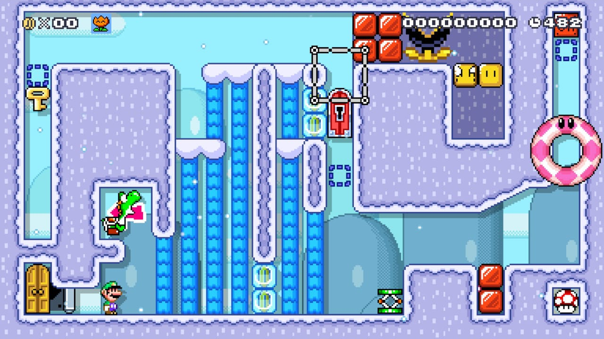
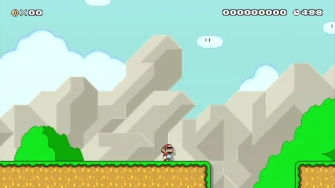

Mario Maker 2 and Open-Endedness
15-April-2025
I recently (finally!) bought my copy of Mario Maker 2 (MM2)! I've been having fun playing "One-Screen-Puzzle" levels and am still taking my time with the infamous troll levels. I'm an avid watcher of CarlSagan42, a person who plays lots of very difficult Mario levels, Celeste levels, and...MM2 troll levels! Since I'm really fond of open-endedness evolution research, I've been thinking a lot about drawing a connection between this concept and the world of games. Watching so many of Carl's videos playing troll levels got me really impressed with what you can MAKE in MM2! It's as if...it's open-ended!
It's difficult for me to give a definition of open-endedness. You could read a lot of papers and each would give its own definition of it. It's hard to pin down a single, exact definition. But for the sake of simplicity, let's call open-endedness the capacity that a system has to constantly produce noticeable and relevant novelty. Noticeable and relevant being extremely relative here. Relative because it's really difficult to determine when something that happened, say in a simulation, is unique...to us. For the computer, it's probably pretty easy: Have you ever heard about the 10,000 Bowls of Oatmeal problem? We could generate millions of levels, but if they all feel the same to the player... is there anything new in them?
"So your algorithm may generate 18,446,744,073,709,551,616 planets. They may each be subtly different, but as they player is exploring them rapidly, will they be perceived as different? I like to call this problem the 10,000 Bowls of Oatmeal problem. I can easily generate 10,000 bowls of plain oatmeal, with each oat being in a different position and different orientation, and mathematically speaking they will all be completely unique. But the user will likely just see a lot of oatmeal. Perceptual uniqueness is the real metric, and it’s darn tough."
Dr.Kate Compton talks about procedural content generation and the 10.000 oatmeal problem (and other things) here.
Games are a good platform to study open-endedness because they often offer us a limited system to act upon - and a system that we already understand. Especially when we talking about an existing game. In a sense, it would be easier for us to spot different bowls of oatmeal when looking at bowls of various Mario levels, than when we look at a simulation that we just built ourselves. A game like Mario has its system done and closed, with strict rules to what is possible. That is: its levels, mechanics, possible actions Mario can take, consequences of these actions, and even a goal (I'm thinking of a platformers here. Yes. Mario.). But we don't have to limit ourselves to these "closed games". We also have Dwarf Fortress and Caves of QUD with infinite possibilities of outcomes, which represent what I'm talking about even more! And these don't even have a flag you need to get in the end! But I want to focus on how Mario could be used to study open-endedness.
So, when looking at a Mario level, what actually makes it different from another one? We could talk about the art of it. A block is blue instead of red. They're in the same place, serve the same function, but have a different skin. Maybe the change was big enough that could give someone a whole different "feeling" to the level. We could also say the same about music! But what about gameplay? Oh, the potential is infinite! Although one could argue that there are limited tools in the game to be used, and the game is simple and closed (Wait, I heard this somewhere). How we use the tools and put them to work together is what makes MM2 a great case of study for open-endedness. Like having emergent behavior in a system with simple rules.
I think that people do this - and they do this a ton in the Mario Maker community! I mean, they use the same oat but somehow create different oatmeal bowls. Give the tools to the player so they can build their own levels gave rise to crazy cool creations that maybe one would find impossible. Like I wrote in the beginning, I really like [One-Screen-Puzzle] levels. They use the existing tools of the game to create these puzzles that to solve, you need to figure out in which order (and sometimes when exactly) you should use a tool and/or take advantage of their interaction so you can reach the final goal. And yes. The tools are numerous, but even so, are limited (you don't need to use all of them either). And their interactions are already described by the game system. Yet, I played a ton of different levels that although some of them used the same gimmick, they felt totally different for me. Those bowls were absolutely different.

The code of this one is W1Y-1LC-XLG. I played all puzzle level from this creator! Good ones! Puzzle levels can be bit frustrating sometimes. When you get the order wrong you have to start the level again. Good thing it's small. I'll show you something worse in a second.
The idea to explore this existing limitation as a motor to understand how variability is built in a system (I know I read a paper on this! I'll look for it and update!) is pretty cool too. Like I said in another draft of mine , we could have a huge number of different rules and possibilities for a Mario. But is the outcome of this relevant at all to us? Or, how long it'd take for a relevant behavior to appear? (considering we're evolving them) When you look into a Mario simple platformers, you have limitations to what the player can do. This pushes the player to think: "How can I solve this problem with the tools I have?". Or to us as we watch evolution like: "How are the entities going to solve this problem with the tools I gave?" The goal could be as "simple" as surviving! Coincidentally, surviving is the main goal of the next type of level we're going to talk about.
Now in MM2 there's a subcommunity of trolls. But not those kind of troll you thought of, these are good ones (Actually, that also depends on your point of view...). The point is, the level makers in this community are often doing their best to trick you into thinking the correct way is jumping to the other side, only for you to the discover that there's a hidden block (they call it kaizo block) right in your jump trajectory. Now Mario hit that block, lost all his momentum and fell into the abyss.

Classic.
There are tons of similar techniques (or should I say traps) documented by the community. (This GIF is from here) We could see all these as patterns that used the system to output an outcome, in this case, kill the player. But there's a bit more to it that turns this kind of thing a bit more difficult to replicate and amazing to think about. A lot of patterns are born from the creator predicting the path the player is going to take, or creating a perfect "bait" for the player, only to reveal the pit (or any other way Mario could be killed. Sorry Mario...). In order to create these baits, or these unexpected behaviors from the game, the creators go out of their way to try things out so they discover how to take advantage of the game system to create these "monstrosities". They evolve these patterns where the fitness is how this pattern fits to the idea the maker is trying to convey at said time. Tick the player? Surprise the player? Make the player rush? Just be cruel because they can? It varies. We'd let the computer chose and see what we get.
Sometimes bugs are used in these levels - and Nintendo is pretty quick in putting down the level that have them - but when I say "unexpected" I want to say that sometimes the player dies because something behaves differently due to some specific interaction: A mechanism off-screen turned a conveyor belt on and Mario was pushed to the pit again. How would you expect that?! Back to the beginning! The mechanisms that are often off-screen are the grinding the gears of these Fortrolls (Fortress+Trolls. I am not sorry.). And these are what the endless interactions and ways to kill Mario that we get. But ok, we don't need to be so mordbid, these mechanisms are also used to create cool challenging levels or simply showcases of the mechanism itself.
The question stays: How can we measure the novelty of these games simulations? How the interaction between entities influence the system outcome? How these influence the entities behavior? How these describe how much open-ended this system really is? These questions could totally be done for an Alife simulation. Games are also a great place to study computational creativity, and how each player's perception affects what is perceived as new, or not. You often only play these troll levels once. The second time, you know everything needed to be done in order to finish the level, so nothing might sound new to you.
Mario Maker 2 is going to be 6 years old later this year (2025) and we still get to play lots of different levels and actually experience different sensations and feelings with them. Troll levels are still showing how different interactions can be used to deliver a good gameplay experience (ok, this is totally debatable). But point is, this game is basically an open-ended canvas for diabolic (and angelic ones too) players to explore its systems and come up with different contraptions born out of the interactions of smaller parts. It's an open-ended system full of emergent behavior and creativity! Its Alife with plumbers and piranha plants.